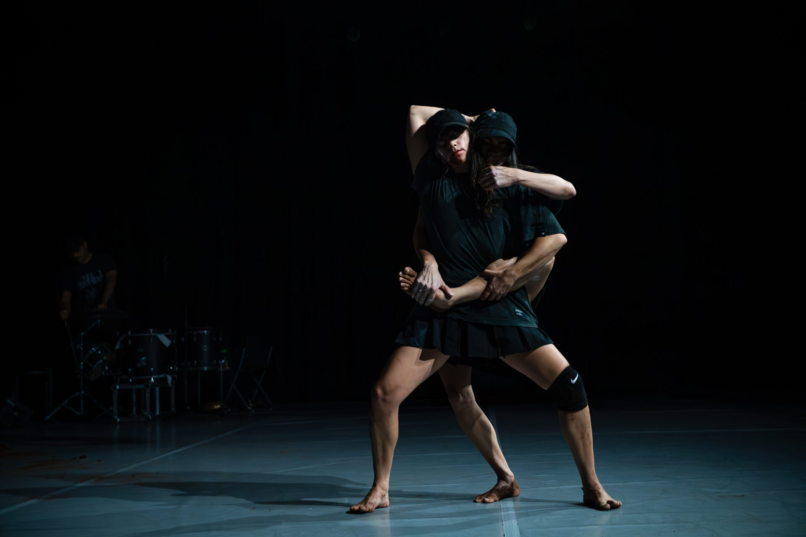
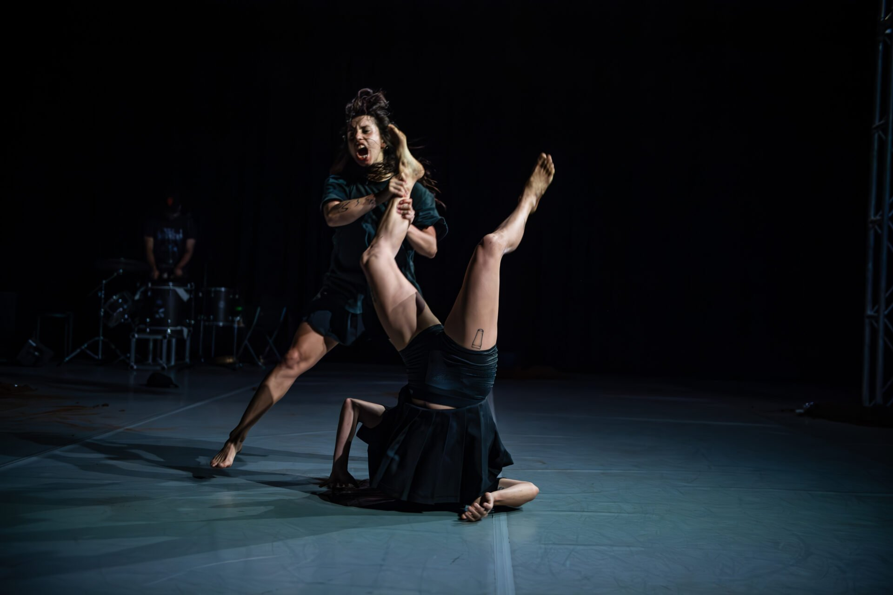

Phantasm by Melanie Lane for Chunky Move. Photo credit Gregory Lorenzutti.


PHANTASM is a performance work by choreographer Melanie Lane, commissioned by Chunky Move as part of Lane’s 2023/24 Choreographer in Residence tenure.
PHANTASM explores the terrain of the supernatural. Ghosts, jinns and heroines emerge from the underworld, drawing from stories of feminine spirits and fictions. Unpacking the roots of these stories and re-visiting them as bodies of resistance and knowledge, PHANTASM creates a world where there is slippage between the seen and the unseen, and where the spirit realm permeates through a dance that transforms and transcends.